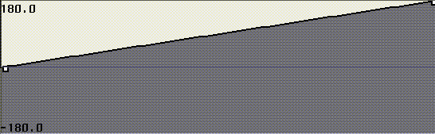
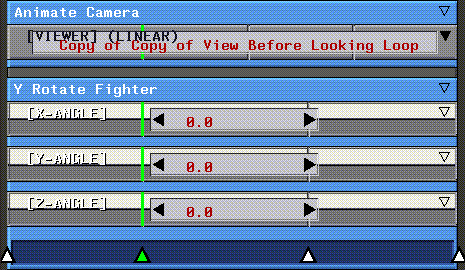

Figure 4.23 Filtered curve parameters
This chapter describes how to work with data in curve channels. Curve channels contain dynamic data that is used to execute operations with which the curve channel is associated.
Curves are channels that contain data only. Typically, a curve exists in a channel parallel to an action, and regulates how the operation is performed by that action over time.
Curves
A curve generally exists inside an action; that is, it's a subchannel to the action:
N-Dynamics lets you specify a variety of basic curve types. The curve type specified for an action can drastically affect how the associated action is animated.
Working with Curves
There are a number of ways to work with curves:
Editing Curve Properties
To edit the channel properties of a curve, (CLICK-M) on the curve channel; the Edit Curve Properties dialog box appears:
Note that the Edit Curve Properties dialog box is actually divided into two sections:
Curve Channel Properties
A curve's channel properties are used for more script oriented tasks; that is, they don't affect the shape of the data curve directly, but rather how the curve channel is displayed in or used by the script.
(CLICK-L) in the Curve type field to specify the type of curve you want to use:
The parameters for each type of curve are described in the section "Curve Types," on page 4-6.
There are three buttons at the bottom of the dialog box:
Curve Types Linear Curves
A linear curve is one whose value changes from cue to cue in a linear fashion. If you use a linear curve, you specify the following parameters:
A sample linear curve (one with cues only at the beginning and end of the channel), looks like this:

If you add additional cues to the curve, the value changes from cue to cue in a linear fashion:
Hold Curves
A hold curve can be used to specify a constant value for the duration of the curve, or between cues:
A sample hold curve (one with cues only at the beginning and end of the channel), looks like this:
Conic Spline Curves
Conic splines curves derive their shape from the cues in the curve. The shape of the curve behaves like a springy piece of material; by changing the tension on this spring both inside and outside the sequence, you can modify the shape. Conic splines do not pass through the value at the cue; they merely try to approximate it.
Conic splines can be manipulated by cue location as well as tension and end treatment.
Figure 4.13 End treatments for conic spline curves
A sample spline curve (one with cues only at the beginning and end of the channel), looks like this:
By changing the bias and tension of individual cues on the curve, you can change its shape:
Kochanek Spline Curves
The Kochanek curve is smoother than a conic spline and passes directly through the cue values. While smoother is generally better, a spline that passes through its cues is a mixed blessing. On one hand, it means that there is a direct and obvious relation between the cue values and the value of the curve at that cue-they are equivalent. On the other hand, there is the issue of "overshoot," which is an important difference between conic and Kochanek splines.
Sketched Curves
Sketched curves are drawn by hand or generated using one of a set of pre-defined operations; sketched curves can be of any shape.
Sketched curves have the following parameters:
A sample sketched curve looks like this:
Filtered Curves
The shape of filtered curves is set by modifying cue values or by adjusting the filter width. Like conic splines, filtered curves do not pass through cues that determine their shape, they merely approximate their position.
Figure 4.24 A sample filtered curve, with a filter width of .25
Slow In Curves
A Slow In curve is exponential; you define the shape of the curve (how slow the "in" effect of the curve is) by changing the exponent value for the curve.
Figure 4.27 A sample Slow In curve
Slow Out Curves
A Slow Out curve (like the Slow In), is an exponential curve; you define the shape of the curve (how slow the "out" effect of the curve is) by changing the exponent value for the curve.
Figure 4.29 A sample Slow Out curve
Spherical Linear Curves
Spherical linear curves use quaternion notation (four values) to record each cue value. This curve type is most often used with certain operations in the Skeletal Animation System to avoid gimbal lock.
Parameters for this curve are identical to those for the Linear curve type, described in the section "Linear Curves," on page 4-6.
If you want to edit a curve directly, you need to use the Curve Editor. In the Curve Editor, you can slide cues, change the value of cues, and for certain types of curves, change the bias, tension, and continuity of cues.
The Curve Editor
Before using the curve editor, you should select the basic curve type for the channel using the Edit Curve Properties dialog box described in the section "Curve Types," on page 4-6.
Next, enter the basic parameters for the selected curve type, as described in the section "Curve Types," on page 4-6.
2. (CLICK-L) on the Edit Curve button at the bottom of the Edit Curve Properties dialog box.
If you were to view the same curve in the Curve Editor, it would look something like this:
The various commands in the Curve Editor are described below:
Exit
Exit from the curve editor after you have made any changes to the curve.
Reset
Resets the curve to its shape when first opened in the Curve Editor, regardless of the number of changes you have made to it.
If you want to escape from the Curve Editor without saving your changes, choose Reset, then Exit.
Fit
Fit and Graph Min/Max are used in conjunction with one another to adjust the scale of the curve. If, for example, you want to use values between 1 and 50 in this curve:
1. Enter those values as your minimum and maximum in the Graph Min/Max text edit boxes.
2. (CLICK-L) or (CLICK-M) on Fit.
Shifting or Scaling the Entire Curve
In the curve editor, the following commands can be used to shift a curve in time or value, or to scale it in value:
As mentioned at the beginning of this chapter, a cue is a marker in a curve channel with a specific value. The shape of the curve is bound by the value in those cues and the curve type.
Working with Cues in Curve Channels
Cues in the curve channels can be modified as follows:
1. Move the mouse over the curve channel.
2. (CLICK-R) on the channel at the point you want to add the cue.
Moving a Cue
Moving a cue left or right changes its position in time; moving it up or down changes its value.
1. Move the mouse over the cue.
2. (DRAG-L) to move the cue left and right in time.
Cue Type #1: The Cue contains a Simple Value
Cues that specify a simple value like degrees of rotation, or a scaling factor can be modified as follows:
Each of the elements on the Adjust Parameter Value dialog box are described below:
Cue Type #2: The Cue contains a Complex Value
Cues that specify a complex value such as a displacement, skeleton pose, or camera view, are modified as follows:
1. Open the parent channel that contains the curves whose cues you want to modify.
2. (SHIFT-M) on the one of the concurrent cue you want to modify.

Deleting a Cue
To delete a cue from a curve channel:
1. Move the mouse over the cue you want to delete.
Editing Sketched Curves
Editing sketched curves is slightly different than editing the other curve types supported by N-Dynamics. When you load a sketched curve into the Curve Editor, only the data contained in the curve itself and a menu bar are displayed:

To edit the shape of a curve manually:
1. Move the mouse over the curve channel.
2. (CLICK-L) and drag to change the shape of the curve.
Exit
Exits from the Curve Editor.
Reset
Resets the curve to its state when you entered the Curve Editor.
Smooth
Smoothes the drawn curve (reducing jaggies and making motion smoother). When you smooth a curve, the following dialog box appears:
You can repeatedly smooth the curve by holding down the appropriate mouse button:
Operations
The operations button lets you perform operations that affect the overall shape of the sketched curve:
Each of these operations is described below:
Change Phase
Shifts the entire curve either right or left in time:
A value of 1 returns the curve to its original position.
Change Value
Shifts the entire curve up or down by adding or subtracting the specified amount from the entire curve:
Decircularize
In some curves, particularly those dealing with rotations, data can be cyclical; for example, a cube rotated 180 degrees looks the same as a cube rotated 540 degrees. In skeletal motion capture files, for example, it's not unusual for a skeleton to think that a bone has rotated 1 1/2 times rather than 1/2 a time; interpolating the position of a skeleton using the data will cause a "jump" when that point in the curve is encountered.
To decircularize the data in the curve:
1. (CLICK-M) on the curve in the script editor.
3. (CLICK-L) on the Operations button in the curve editor.
4. (CLICK-L) on Decircularize.
Figure 4.43 Decircularize curve parameters
Invert Curve in Time
Flips the curve left to right.
Invert Curve in Value
Flips the curve upside down.
Noise Curve
Adds random noise to the curve. Adding noise help eliminate some of the "artificial" feel of some computer animation by adding various levels of randomness to the controlled behavior.
Figure 4.47 Top, original curve; bottom, same curve with noise added
Sawtooth Curve
Sawtooth curves are a simple way to create cyclical motion (such as repeated rotations) over the length of a channel.
A sawtooth curve looks something like this:
Sine Wave Curve
Creates a series of sine waves over the length of the curve. This is useful for repetitive "in/out" or "side to side" motion.
The curve operations menu performs a number of curve related operations; moving and resizing curves, working with cues inside the curve, and other various options.
Curve Operations Menu
(CLICK-R) on a curve channel to see the curve operations menu:
Each of these commands is described in the sections below.
Cut
Cuts the curve in half, creating two sequential curves.
The cue at which the two sequential curves meet shares a single value with both:
Delete
Deletes the curve channel from the script. Note that an operation that normally expects to find a curve channel for the script use whatever local value is available to execute the operation.
Insert Parent
Inserts a parent channel around the selected curve channel. The inserted channel is given the same operation type as the current parent channel. For example, in Figure 4.53, if the channel zzz is a Z Rotate operation, the inserted parent is also a Z Rotate operation:
Replace with Action
Replaces the selected channel with an action. The action assigned an operation type of None.
To replace a curve with an action:
1. (CLICK-R) on the curve you want to replace.
2. (CLICK-L) on Replace with Action.
Figure 4.54 Top, channel with curve; bottom, curve replaced by operation
Replace with Copy
Replaces the selected curve with the last channel remembered with the Remember command.
Replace with Variable
A curve channel may take its value at any point, by evaluating a variable that has been defined in another channel. If you want to use a variable in one channel that has been created in another:
This command is described in more detail in the section "Replace with Variable," on page 3-44.
Replace with Sequential Curves
Inserts a parent channel (named Sequential Curves) around the selected curve channel (of type Return Value). Sequential curves must be contained in a parent channel.
This command is described in more detail in the section "Replace with Sequential Curves," on page 3-46.
Extend
This is identical to the operation for actions described in "Extend Curves," on page 3-55.
Freeze Cues/Unfreeze Cues
Freeze or unfreeze all cues contained in the current channel.
Frozen cues are described in more detail in the section "Freeze/Unfreeze," on page 3-27.
Respace Cues
Redistributes the curves in a channel evenly over the length of the channel. To respace the cues in a curve channel:
1. Move the cursor over the curve.
3. (CLICK-L) on Respace Cues Evenly.
Set Timeline
This is identical to the operation for actions described in "Set Timeline," on page 3-57.
Slide this Curve
This is identical to the operation for actions described in "Slide," on page 3-55.
Add Cue
Adds a new cue to a curve channel. To add a new cue:
1. (CLICK-R) on the curve channel where you want to insert the cue.
2. Choose the Add New Cue command.
Add Multiple Cues
Adds the specified number of cues to the channel, spacing them evenly over the length of the channel.

Edit all Cues
Edit values for all cues in the selected curve channel. The interaction is slightly different depending on whether the channel contains simple values (e.g. rotation angle, scaling factor) or complex values (e.g., camera view, displacement state, or skeleton pose).
Cue Type #1: Cues in the Channel Represent Simple Values
Cues that specify a simple value like degrees of rotation, or a scaling factor can be modified as follows:
1. (CLICK-R) on the curve whose cue values you want to edit.
2. (CLICK-L) on Edit all Cue Values.
Figure 4.57 You can edit the values for all cues in a given curve channel3. Modify any or all of the values by clicking in the appropriate text box.
Cue Type #2: Cues in the Channel Represent Complex Values
Cues that represent a complex value such as a camera position, displacement state, or skeletal pose display the same dialog box shown in Figure 4.57; however, any mouse click brings up a list of saved positions, displacement states, or poses that can be inserted at that cue.
Empty of Cues
Removes all cues from the curve (except for the default cues at the beginning and end of the channel).
Deactivate
Temporarily deactivates the curve (in most cases, causing the operation to have no effect).
Remember
Remembers the selected curve channel, so that it can be copied into another channel in the script with the Replace with Copy command. All cues and their values are copied into the target channel.
Copyright © 1996, Nichimen Graphics Corporation. All rights reserved.